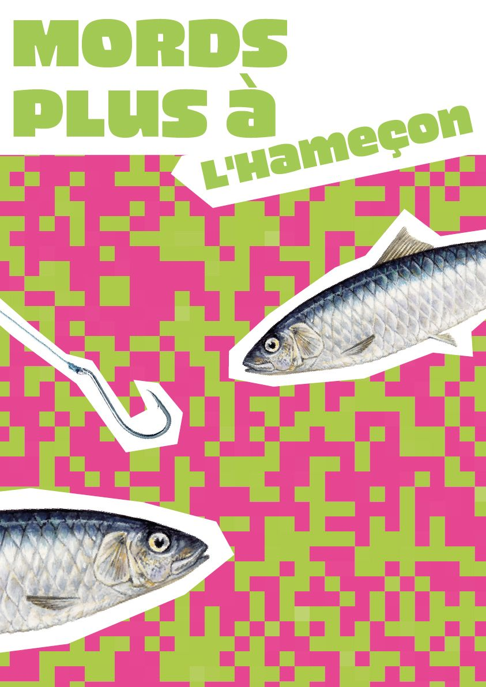

Macrocosmos
Event identity
To discover the city’s flora and fauna, Paris City Hall is organizing « Macrocosmos » event. The identity expresses the union between biodiversity and the city in a unifying and poetic way. It suggests getting lost in the poster as if it were a map : by comparing the veins of plants and the streets on maps. I deepened my iconographic research through photography, drawing, and watercolor painting.